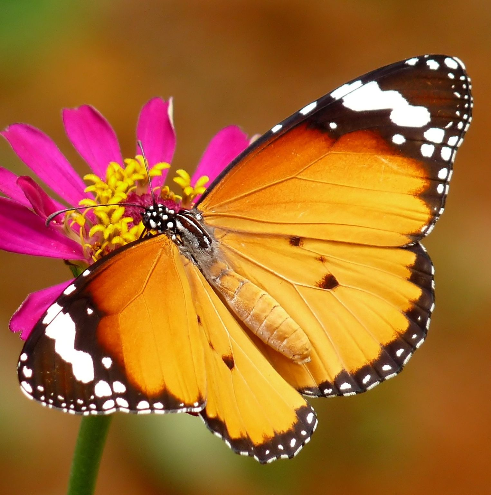
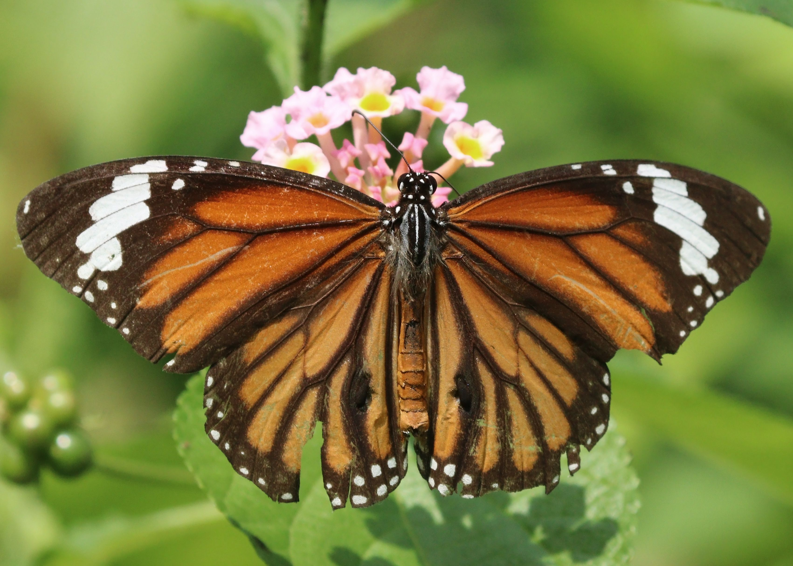
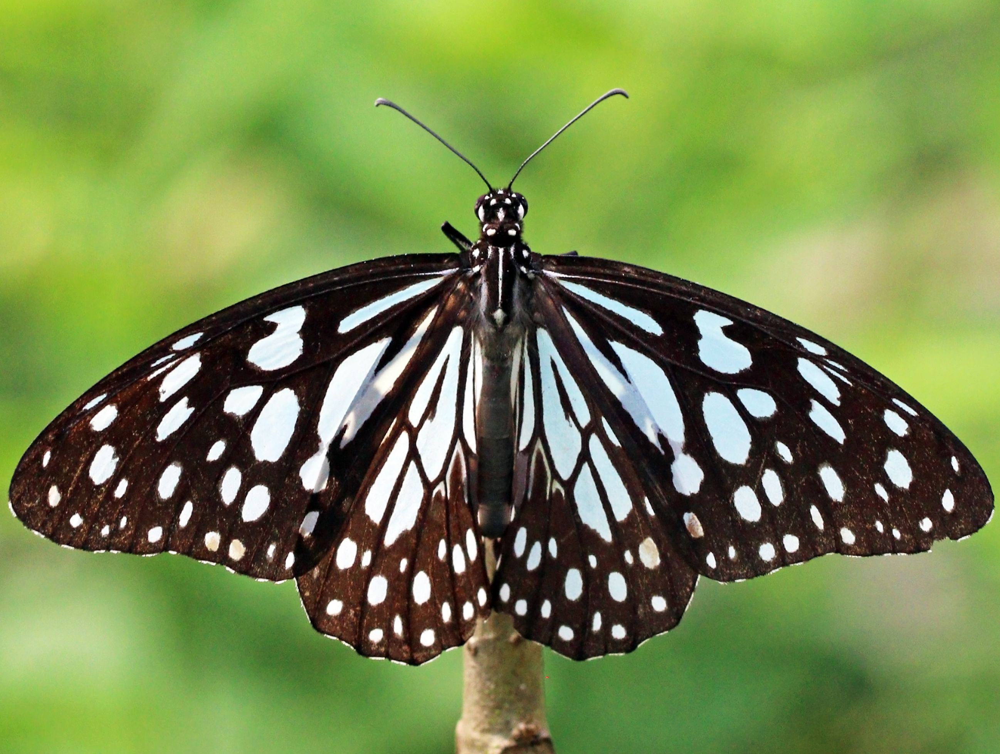

Scientific Name: Danaus Chrysippus
Wingspan: 70-80mm
Notes: polymorphic, unpalatable with milkweed toxins

Scientific Name: Danaus Genutia
Wingspan: 70-95mm
Notes: Unpleasant smell, taste and can fake death

Scientific Name: Tirumala Limniace
Wingspan: 90-100mm
Notes: gregarious migration